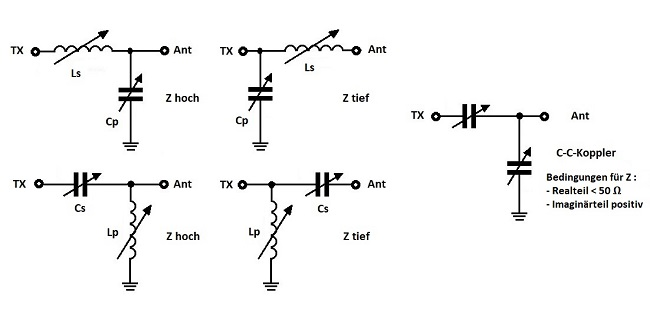
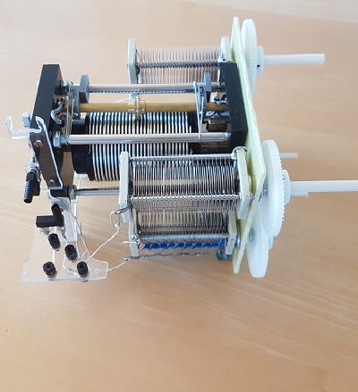
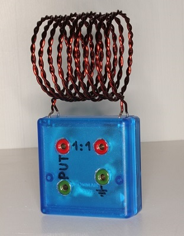
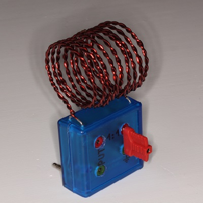

1. Teil Einige theoretische Betrachtungen
Im Antennenkoppler und auf der Zuleitung zur Antenne können je nach Konzeption der Anlage grosse Verluste auftreten. Diese gilt es zu minimieren. Gestützt auf die umfangreichen Arbeiten von Walter, DL3LH [1], habe ich als Beispiel eine mögliche einfache Lösung gesucht und dabei meinen schon vorhandenen Antennenkoppler MFJ-974HB im Hinblick auf eine Verlustminimierung umgebaut (siehe Bilder unten).
Da ein LC-Anpassnetzwerk (LC-APN) im Vergleich zu anderen Kopplerprinzipien die geringsten Verluste aufweist, habe ich den als T-Tuner konzipierten Koppler MFJ-974HB (er zeigt eine C-L-C-Bauform) in ein solch einfaches LC-Anpassnetzwerk mit nur zwei Blindkomponenten umgewandelt. Der symmetrische Aufbaus des bestehenden Tuners mit der HF-mässigen Isolation des C-L-C-Blocks erlaubt es, den neu zu konstruierenden L-C-Koppler so zu gestalten, dass alle fünf möglichen Aufbauvarianten (Abb. 1 und Abb. 2), mit der Spule oder dem Kondensator in Serie oder parallel, sowohl gegen den Sender als auch gegen die Antenne hin, eingestellt werden können (Bild 2 und 3). Damit kann ja auch ein hohes oder tiefes Z angepasst werden. Aber der Koppler kann in dieser Konfiguration auch noch als C-C-Koppler (siehe DL3LH, [2]) eingestellt werden (Abb. 1 und 2), womit sich in bestimmten Fällen die Verluste nochmals massiv reduzieren lassen.
Die Symmetrierung erfolgt nach dem Umbau jetzt nicht mehr vor dem APN, sondern wie es besser ist, hinter dem APN (siehe DL3LH, [1]). Auch W8JI äussert sich aufgrund ausgedehnter Messungen dezidiert zur Frage, wohin ein Balun, - vor oder nach dem Anpassnetzwerk -, hinkommen soll: "A balun on the input of a floating unbalanced network is a waste of time" (www.w8ji.com/tuner_baluns.htm). Zur Symmetrierung wird hier ein verlustarmer Luftbalun verwendet, der direkt an der Hinterwand des Kopplers angesteckt wird (Bild 4). Dieser Luftbalun kann antennenseitig mit der Zweidrahtleitung so verbunden werden, dass er entweder als "1:1 HF-Transformator" oder als "Phasen-Umkehr-Transformer" (PUT) arbeitet, was je nach den Impedanzverhältnissen an dieser Stelle eine weitere Reduktion der Verluste erlaubt.


Da, ausser bei einigermassen angepassten Impedanzen, die Verluste auf einem Koaxialkabel wegen der Reflexion sehr schnell ansteigen, kommen zur verlustarmen Anpassung eigentlich nur Zweidrahtleitungen als Antennenzuleitungen in Frage. Wird eine solche verwendet, muss die Zuleitungslänge der Hühnerleiter, - abhängig von den vorhandenen Impedanzen am Fusspunkt der Antenne -, geplant werden. Dadurch lassen sich vorteilhafte Impedanzen am Eingang der Zweidrahtleitung (= am Ausgang des Kopplers) realisieren und weitere Verluste vermeiden.
Für die Symmetrierung zum Anschluss an eine Paralleldrahtleitung gibt es viele Lösungen, die jedoch alle ihre entsprechenden Verluste haben. Symmetrierlösungen mit Ferritkernen können nicht unbeträchtliche Verluste erzeugen und weisen bei grösseren Verstärkungen auch gewisse Einschränkungen auf. Die Verwendung eines Luft-Baluns stellt eine gute Kompromisslösung dar. DL3LH hat eine für den gesamten KW-Bereich gute Lösung angegeben: zwei verdrillte 1.5mm Kupferlackdrähte werden mit 9 Windungen zu einer Spule von 50 mm Durchmesser und 50 mm Länge gewickelt. Dadurch erhält man auf der Primär- und Sekundärseite eine Spule von etwa 3 bis 3.5 µH. Mit dieser Lösung, welche unter Umständen auch als Phasenumkehrtransformator (PUT) geschaltet werden kann, sind die Verluste durch die Symmetrierung gering, wenn diese im Antennensystem an der richtigen Stelle erfolgt. Wie verschiedene Berechnungen (DL3LH,[1]) ergeben und wie oben bereits angetönt wurde, ist der beste Ort eines Baluns nach dem APN, also am Ausgang des Antennenkopplers.
Ich konnte übrigens beobachten, dass bei der Verwendung eines 1:1 HF-Transformators (wie z. B. eines Luftbaluns) die Impedanzen vom Eingang der HL auf die Balun-Eingangsseite oft in einen Bereich transformiert werden, wo der Realteil kleiner als 50 Ohm und der Imaginärteil induktiv ist. In diesem Fall kann dann der davorgeschaltete Antennenkoppler als CC-Koppler betrieben werden. Dies ergibt eine weitere Verlustminimierung, weil zur Anpassung keine verlustbehaftete Induktivität nötig ist.
Wie von vielen Autoren gezeigt wurde, hat die einfache LC-Variante eines APN über alles gesehen am wenigsten Verluste. Rechnungen ergeben, dass andere, oft verwendete Koppler (mit mehr als zwei Blindelementen, z. B. Pi-Tuner, T-Tuner), grössere Verluste aufweisen, vor allem wenn nicht die richtige Einstellung gefunden wurde. Deshalb habe ich meinen vorhandenen T-Tuner (Cs-Lp-Cs) in einen (asymmetrischen) LC-Tuner umgebaut mit dem Vorteil der eineindeutigen Resonanzabstimmung.
Der Koppler kann nach dem Umbau in 5 Varianten betrieben werden, wie aus dem Schema (Abb. 2) ersichtlich ist. Dafür müssen die drei Anschlüsse: «TX», «Masse», «Ant» in drei von den vier möglichen Anschlüssen des LC-Blocks eingesteckt werden, also bei «L», «C1», «C2», oder bei «LC» (Abb.2).
2. Teil Ein praktisches Beispiel zur Koppler- und Symmetrierungsauswahl
Bei meiner 79 m langen Delta-Loop, welche ich für 80m, 60m und 40m brauche, können mit einem miniVNA-pro folgende Impedanzen gemessen und folgende Verluste auf der Hühnerleiter berechnet werden (Tab. 1):
| MHZ | Impedanz Z am Einspeisepunkt der Deltaloop Ω |
Impedanz Z am Eingang der 7.5 m langen 450 Ω Hühnerleiter Ω |
Verlust der 450 Ω - Hühnerleiter dB |
|---|---|---|---|
| 3.65 | 160 - j 136 | 158 + j 125 | 0.032 |
| 5.358 | 3506 + j 421 | 91 - j 340 | 0.028 |
| 7.1 | 151 - j 454 | 88 + j 190 | 0.078 |
Mit den gegebenen Eingangsimpedanzen an der Hühnerleiter werden die Verluste des (oben beschriebenen) davorgeschalteten Luftbaluns berechnet, respektive die Verluste bei Schaltung des Luftbaluns als Phasenumkehrtransformers (PUT):
| MHZ | Impedanz Z am Eingang der 7.5 m langen 450 Ω Hühnerleiter Ω |
Verlust 1:1 Luft-Balun k = 0.934 Lopt = 3,5µH QL =100 dB |
Verlust 1:4 PUT k = 0.934 Lopt = 3,5µH QL =100 dB |
|---|---|---|---|
| 3.65 | 158 + j 125 | 0.28 | 0.03 |
| 5.358 | 91 - j 340 | 0.31 | 0.07 |
| 7.1 | 88 + j 190 | 0.51 | 0.10 |
Aus Tabelle 2 ist ersichtlich, dass die Schaltung des Luftbaluns als PUT in unserem Beispiel die viel geringeren Verluste hat.
Also wählen wir die Schaltung des Luftbaluns als PUT aus und berechnen die Impedanz am Eingang des PUT, was uns auch aufzeigt, ob der Antennenkoppler als LC- oder CC-Koppler geschaltet werden soll. Der Verlust der entsprechenden Kopplerart wird berechnet und die Gesamtverluste des Systems Koppler + PUT + Speiseleitung (HL) werden bestimmt:
| MHZ | Impedanz Z am PUT-Eingang Lopt = 3,5 µH QL = 100 Ω |
Wahl der Art des Kopplers |
Kopplerverlust LC- respektive CC- QL = 100,QC = 500 dB |
Gesamtverlust Koppler + PUT + Speiseleitung dB |
|---|---|---|---|---|
| 3.65 | 23.96 + j 14.67 | CC-Koppler | Pv< 0.03 | 0.090 |
| 5.358 | 78.58 + j19.57 | LC-Koppler | 0.04 | 0.138 |
| 7.1 | 16.87 + j 7.47 | CC-Koppler | Pv< 0.03 | 0.208 |
Wie man sehen kann, werden einerseits durch die Optimierung des LC-Gliedes (entweder LC- oder wenn möglich CC-Glied), andererseits durch die Wahl der Symmetrierung (hier ist der PUT besser als der 1:1 Luftbalun) und zuletzt durch eine symmetrische Speiseleitung (hier eine 450 Ω Hühnerleitung) sensationell geringe Verluste erreicht!
Die mühsam erzeugte HF-Leistung geht im berechneten, obigen Beispiel wirklich zum grössten Teil zur Antenne, und sie geht nicht unterwegs als Wärme verloren!
Abschliessend noch ein Hinweis auf zwei im Internet frei erhältliche Programme, die für die obigen Berechnungen helfen können: für die Impedanzen und Verluste auf Speiseleitungen gibt es ein gutes Programm von AC6LA, "TLDetails"; Ein sehr gutes Programm zur Berechnung der Verluste stellt Walter, DL1JWD, zur Verfügung: "kleiner Netzwerkanalysator" unter : https://dl1jwd.darc.de . Für die Verlustberechnung eines Baluns sei auf (https://gutachten-emvu.jimdo.com – Nr.105) hingewiesen.
[1, 2, 3] DL3LH, diverse Publikationen; auf Anfrage direkt von DL3LH: (https://gutachten-emvu.jimdo.com/kontakt)
Giorgio, HB9AWJ (Kontakt : hb9awj@de-suisse.ch)
Bilder des Luftbaluns sowie des zum asymmetischen L/C-Koppler umgebauten MFJ-974HB





